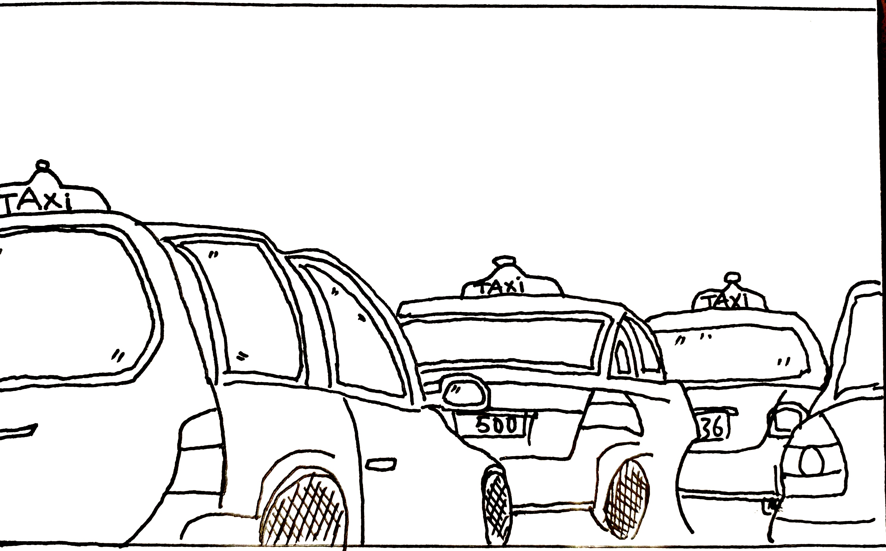

Taxi are waiting at the parking space which go straight exit from Arrival
platform.
131 008 is Australia's first national taxi booking phone number.
131 008 connects people from all over Australia with their local taxi
service for the cost of a local call (higher from a mobile).
Is UberX cheaper than taxis? For example, in Sydney, UberX costs $1.45 per kilometre plus $0.40 per minute,
while the maximum taxi rate is $2.19 per kilometre plus $0.94 per minute the vehicle is travelling less than 26 km/h
A Sydney airport taxi ride into the city will cost approximately 28.30€ (AUD$45) and take 20 minutes in normal traffic.
Sydney ranked third on the list with an average taxi fare of $A3. 95/km,
making it the most expensive Australian airport to catch a taxi to the CBD.
131 008 is Australia's first national taxi booking phone number.
131 008 connects people from all over Australia with their local taxi
service for the cost of a local call (higher from a mobile).
Is UberX cheaper than taxis? For example, in Sydney, UberX costs $1.45 per kilometre plus $0.40 per minute,
while the maximum taxi rate is $2.19 per kilometre plus $0.94 per minute the vehicle is travelling less than 26 km/h
A Sydney airport taxi ride into the city will cost approximately 28.30€ (AUD$45) and take 20 minutes in normal traffic.
Sydney ranked third on the list with an average taxi fare of $A3. 95/km,
making it the most expensive Australian airport to catch a taxi to the CBD.